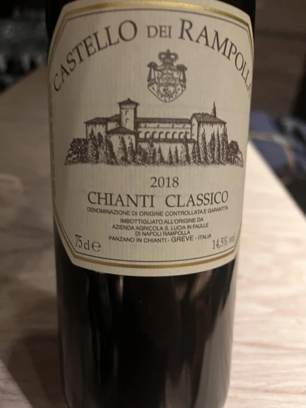
- Type
- Red Still, Dry
- Producer
- Castello dei Rampolla
- Vintage
- 2018
- Location
- Italy, Chianti Classico DOCG
- Grapes
- Cabernet Sauvignon, Merlot, Sangiovese
- Alcohol
- 14.5
- Sugar
- NA
- Price
- 1067 UAH
- Cellar
- N/A
Ratings
2022-07-25 - 7.75
This is the case when I understand that the wine is good, but I find it difficult to fully enjoy it. I like the bouquet: cherry, dark plum, spices, milk chocolate, and some cream liquor (not going to call names). Bold and pronounced, very direct in acidity and tannin. Maybe it needs more time in bottle to become equality beautiful in the nose and in the taste.
Related
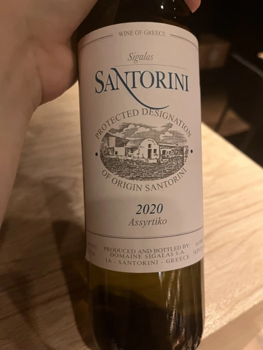
Domaine Sigalas
Santorini - 2020
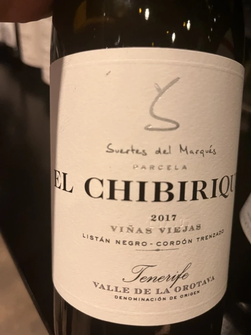
Suertes del Marques
El Chibirique - 2017
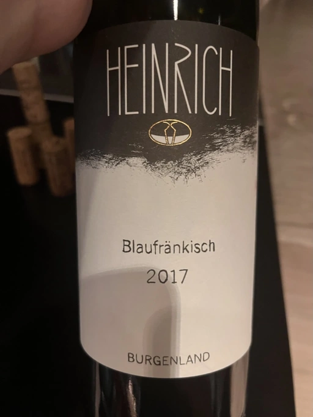
Heinrich
Blaufränkisch - 2017

Domaine du Pélican
Trois Cépages - 2018
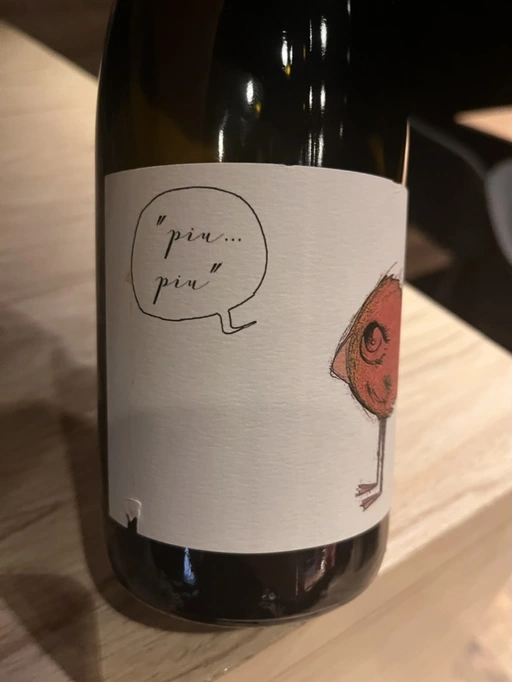
Fio Wein
Piu Piu Petnat Rosé - NV
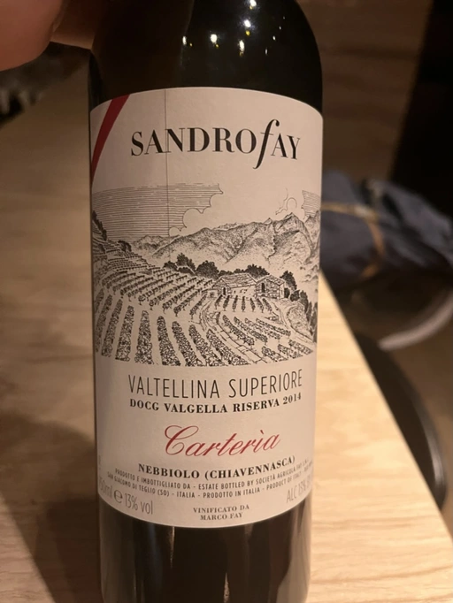
Sandro Fay
Valtellina Superiore Valgella Riserva Carteria - 2014
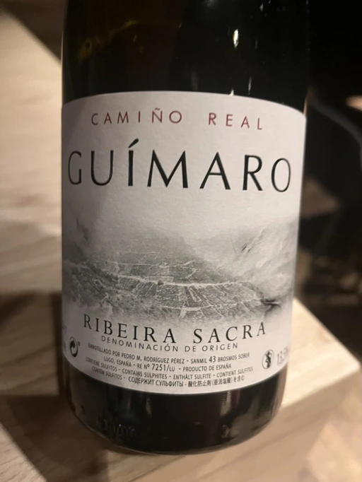
Adegas Guimaro
Camiño Real - 2017
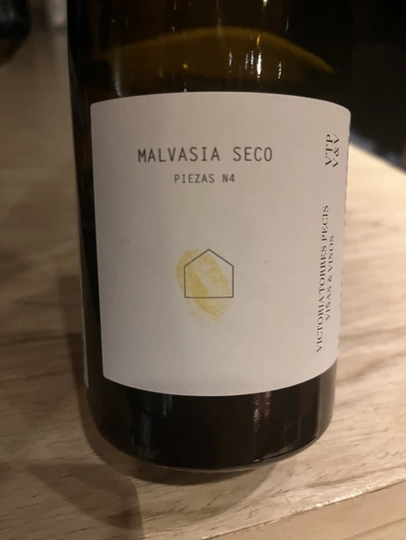
Victoria E. Torres Pecis
Piezas #4 Malvasia Seco - 2018
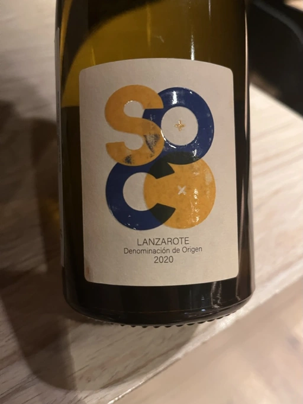
Soco Vinicola
Soco Blanco - 2020
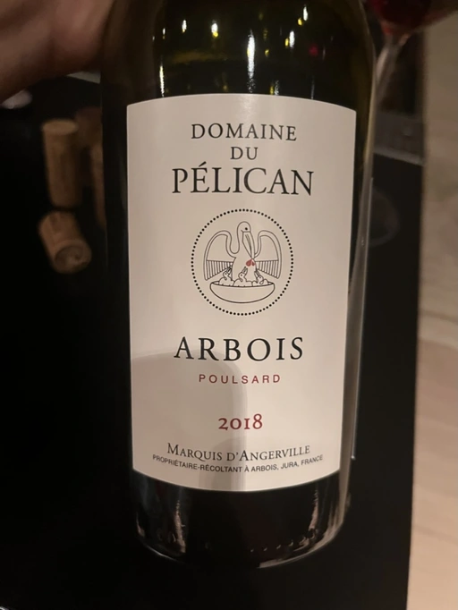
Domaine du Pélican
Poulsard - 2018
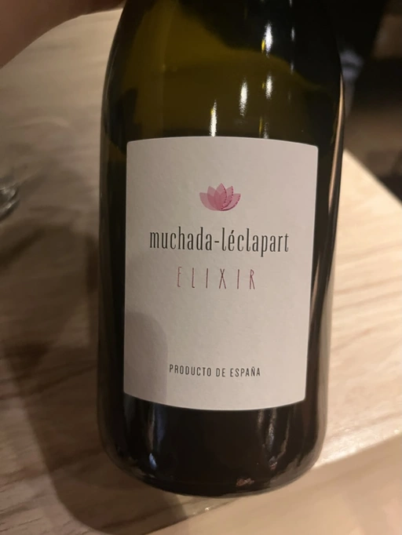
Muchada-Léclapart
Elixir - 2017